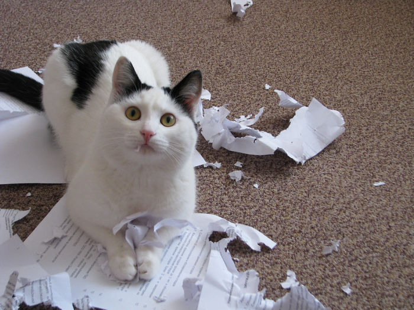

Somos uma Organização sem fins lucrativos , na verdade um grupo de amigos que se juntaram por uma causa: trazer os animais que precisam de um lar para pessoas que querem adotar o seu novo amigo(a).Essa ideia partiu de um de nossos amigos,ele queria adotar um animal para alegrar mais o lar dele e estava com dificuldades de se encontrar animais nos grupos de adoção das redes sociais.
O nosso lema:"AMIGO NÃO SE COMPRA,SE ENCONTRA" fazemos acontecer,pois aqui trazemos a oportunidade de voce encontrar um novo amigo e dar um lar à ele!
Acredito que dar um lar a um novo amigo(a) é um passo muito importante algo de beneficio para ambos para o animal como para o seu dono.
Todo aquele sossego que você tinha em sua casa acabou, pois com os animais é só festa e travessuras de vez, em quando.
Quem nunca acordou de madrugada pra abrir a porta pro seu gatinho? Ou acordou e foi até a sala de estar e viu seu gato ou cachorro picando folhas de papel no chão.

Eu tenho uma cachorrinha chamada “Kyara” por causa da franquia de filmes “O Rei Leão” ela por sua vez parece um anjinho, mas por traz do anjinho tem aquela personalidade de artista, ela é uma “vira-lata” que uma mulher me vendeu como um animal de raça misturada (husky + Pastor alemão) dessas duas raças ela não tem nada.
A Kyara em seus primeiros dias aqui na minha casa ela chorava a noite toda,nem conseguíamos dormir imagina os vizinhos!
Ela sempre foi artista comia direto “cimento e rejuntes do chão e da parede” como também rasgava e arrastava os tapetes que minha mãe coloca na porta de casa.
Apesar dela ser muito terrorista, ela é muito carinhosa e gosta de proteger agente, se alguém estranho vem ate a porta da minha casa ela late e rosna para a pessoa.
Bem contei tudo isso das travessuras até as coisas carinhosas que minha cachorra faz, com objetivo de deixar uma mensagem “amigo não se compra, se encontra”.Disse também que comprei a Kyara não é mesmo? Então eu a comprei pois olhei nas fotos de um anuncio e olhei pra foto dela foi como algo que veio do meu coração eu sei que ela seria uma amiga pra mim e realmente ela foi e continua sendo minha melhor amiga canina, com a presença dela no meu quintal meus dias de quarentena por conta do surto de Covid-19 ficaram mais alegres e com muitas mordidas e lambidas.
Mas com o nosso projeto” Buscapet” trazemos a oportunidade de se adotar um novo amigo de forma gratuita e com incentivos para a adoção.
© Untitled. All rights reserved 2021. | | Developed by BUSCAPET.